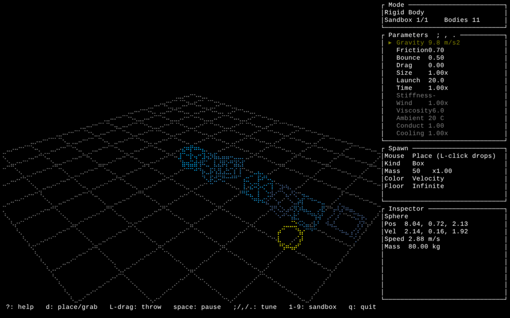
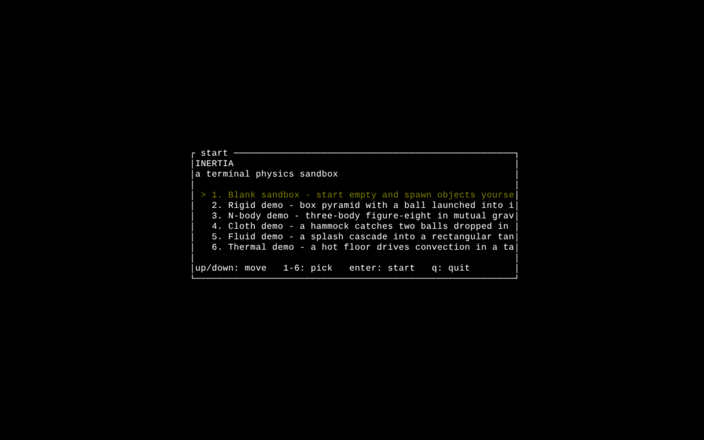

Rust · rapier3d · renders to braille
A physics sandbox in your terminal.
Inertia simulates rigid bodies, orbital gravity, cloth, fluid, and heat in full 3D, then draws the whole scene with Unicode braille. No GPU, no window server. The same engine now compiles to WebAssembly, so it runs in your browser too.
Rust
WebAssembly
60 fps
No GPU
MIT / Apache-2.0

Real physics, drawn in text.
Inertia is a real-time playground that lives entirely inside a terminal. Every solid, particle, and spring is simulated in three dimensions and rasterized with braille glyphs, so each character cell doubles as a 2×4 block of pixels. The result is a smooth, shaded 3D scene made of nothing but text.
Rigid-body dynamics run on rapier3d; the n-body gravity, mass-spring cloth, smoothed-particle fluid, and the temperature field on top of it are built from scratch. You orbit the camera, spawn and throw objects, pour water, heat things up, and watch it all settle, sixty times a second.
Because the engine is plain Rust, it also compiles to WebAssembly and renders to a canvas through ratzilla. Every demo below is the exact terminal program, running in the browser.
The simulations
Six sandboxes, one engine.
Five open on a preset scene; the sixth starts empty. Launch any of them in the browser, then take the controls: orbit the camera, spawn objects, and push the parameters around.
Get it running
In the browser, or in your shell.
Install from crates.io
Needs a recent Rust toolchain. The crate is published as inertia-tui; the installed command is inertia.
$ cargo install inertia-tui $ inertia
Build the browser demo
The web build uses trunk and the
wasm32-unknown-unknown target. Point trunk at this site's
demo/ folder and the Launch buttons light up.
$ rustup target add wasm32-unknown-unknown $ trunk build --release --dist site/demo
Controls
Arrow keysOrbit the camera
Shift + arrowsPan across the scene
+ / -Zoom in and out
Left dragGrab an object and throw it
b · s · nSpawn a box, sphere, or star
dCycle tool: place, grab, pour, heat, build
SpacePause, then m to step one frame
1 – 6Switch between the sandboxes
? · qFull help, and quit